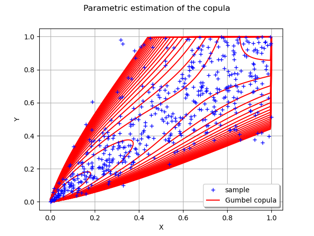

Note
Click here to download the full example code
Graphical copula validation¶
In this example we are going to visualize an estimated copula versus the data in the rank space.
from __future__ import print_function
import openturns as ot
import openturns.viewer as viewer
from matplotlib import pylab as plt
ot.Log.Show(ot.Log.NONE)
Create data
marginals = [ot.Normal()] * 2
dist = ot.ComposedDistribution(marginals, ot.ClaytonCopula(3))
N = 500
sample = dist.getSample(N)
The estimated copula
estimated = ot.ClaytonCopulaFactory().build(sample)
Cloud in the rank space
ranksTransf = ot.MarginalTransformationEvaluation(marginals, ot.MarginalTransformationEvaluation.FROM)
rankSample = ranksTransf(sample)
rankCloud = ot.Cloud(rankSample, 'blue', 'plus', 'sample')
Graph with rank sample and estimated copula
myGraph = ot.Graph('Parametric estimation of the copula', 'X', 'Y', True, 'topleft')
myGraph.setLegendPosition('bottomright')
myGraph.add(rankCloud)
# Then draw the iso-curves of the estimated copula
minPoint = [0.0]*2
maxPoint = [1.0]*2
pointNumber = [201]*2
graphCop = estimated.drawPDF(minPoint, maxPoint, pointNumber)
contour_estCop = graphCop.getDrawable(0)
# Erase the labels of the iso-curves
contour_estCop.setDrawLabels(False)
# Change the levels of the iso-curves
nlev = 21
levels = ot.Point(nlev)
for i in range(nlev):
levels[i] = 0.25 * nlev / (nlev - i)
contour_estCop.setLevels(levels)
# Change the legend of the curves
contour_estCop.setLegend('Gumbel copula')
# Change the color of the iso-curves
contour_estCop.setColor('red')
# Add the iso-curves graph into the cloud one
myGraph.add(contour_estCop)
view = viewer.View(myGraph)
plt.show()

Total running time of the script: ( 0 minutes 0.119 seconds)